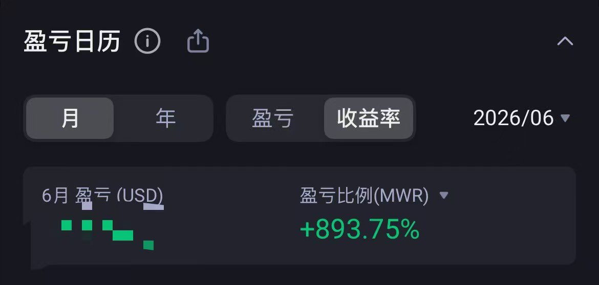

短线资金和短线资产比
长线资金和长线资金比
理财资金和理财资金比
现金利率和现金利率比
什么意思呢
你不能拿百米跑和马拉松比速度
也不能拿马拉松和百米跑比时间
两者都有其存在的意义和价值
你要去买soxl那你对比btc合约
你要去买crcl那你对比你买的其他成长股
你要去买茅台那你对比你的银行理财
你要对比美债收益那你对比其他国家债券
你拿soxl的波动去看茅台是理解不的
你只有在相同的资金预期下去对比
你买soxl的自己和买btc合约期权那些的
应该都是可以归零的小额资金
你买crcl的资金是可以放五年起的
能够有增长空间的成长企业
短期波动肯定是会存在的
但是你对比二者的胜率和赔率crcl是不是更优
同样道理
你有一部分钱是不敢亏完的需要托底的
但是买银行的理财风险也不小
那你不如买一个股息5%的茅台
底层资产清晰可见
相当于还送了一个看多经济复苏的期权
如果经济复苏白酒复苏茅台增速起来
pe还会有戴维斯双击
如果你几乎不能接受任何波动
那你就去买固收类的美债对比人民币国债
一个5%一个2%
很显然十年下来也差不少
我们资产配置组合里
不可能都是短线资金
叫你全仓AI的如果你资金小要博一下
你知道自己的风险就好
叫你全仓茅台我也没说过这种话
但如果你有需要放在理财不敢亏掉的钱
要给孩子读书给家里预备未来开支的
那我就建议你买茅台
还有我也给你对比了
假如你有一套二三线的房产
卖又卖不掉
这时候你抵押贷款出来利率是2-3%
买成茅台股息是4-5%
租出去收益率是1-2%
这个组合下来你的房子就盘活了
相当于有3%的利差
你说茅台跌了怎么办
只要茅台一直给你股息
短期的涨跌你不需要太在意
时间久了波动也会给你机会赚钱
还不考虑茅台实际还是有增长的
我说买茅台
对比的是这种组合以及理财配置
你非要拿茅台对比英伟达美光
说是茅台是粪坑
我无言以对
就算在马拉松世界冠军面前
你找一个练百米跑的高中生
让他们跑一跑
然后你说世界冠军也不过如此
嗨 行 你说得对
